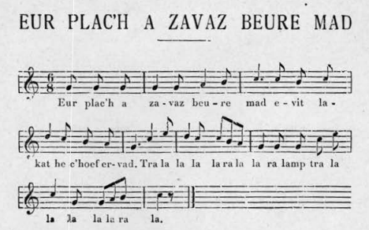

Ur plac'h a zavas beure mat
Une jeune fille se leva de bon matin
A girl got up early in the morning
Chant recueilli par François-Marie Luzel
Auprès de Marguerite Philippe.
Publié avec la mélodie dans "Trois chansons de Marc'harid Fulup", p. 5

Mélodie
Arrangement par Christian Souchon (c) 2023
Source: site tob.kan.bzh
|
Ur plac'h a zavas beure mat 1. Ur plac"h a zavas beure mat Evit lakaat he c'hoef avat. DISKAN Tra la la la la ra la la la lamp Tra la la la la la ra la. 2. He mamm a lavare dezhi - 0 Doue, koantan plac'h eo c"hwi! - 3. - Petra dal din-me be'añ koant, Pa nan hellan ket kaout ma c'hoant? - 4. - Tevet, ma merc'h, na ouelet ket: 'Benn ur bla c'han vehet dimeet. - 5. - Ur bla 'zo hir da skuilh daeroù, Rak 'benn ur bla me vo marv. 6. Rak 'benn ur bla me vo rnarv; Dime'iñ neuze nep a garo! 7. Pa vin-me marv hag interet, Lakait ma bez ' kreiz ar vered! 8. Lakait ma bez kreiz ar vered Hag e-warnañ pevar boked! 9. Pevar boked, peder rozenn, Div a vo ruz ha div 'vo gwenn. 10. Ar gloer yaouank, pa dremenfont, Peb a bater a lavarfont. 11. Peb a bater, peb a ave 'Vit ar plac'h yaouank 'zo aze. -- 12. - Ar c'hloareg yaouank 'lavare, Dre ar vered pa dremene : 13. - Setu aze bez ur plac'h koant A zo marvet gant keuz d'he c'hoant, 14. A zo marvet gant keuz d'he c'hoant, Gant keuz d'ur miliner yaouank. 15. Ganl keuz d'ur miliner yaouank , D'eus koste ar ger a Wengamp. - 16. Ar plac'h yaouank a lavare Diwar bordig he bez nevez: 17. - Kloareg yaouank kit en ho c'hent, Me a zo bremañ evel kent. 18. Kloareg yaouank it en ho tro Ha lez't en peoc'h ar re varv. - |
Une jeune fille se leva de bon matin 1. Une jeune fille se leva de bon matin Pour mettre sa coiffe avec soin. REFRAIN Tra la la, etc ... 2. Sa mère lui disait - Mon Dieu, quelle jolie fille vous êtes! - 3. - Que me sert-il d'être jolie Puisque je ne puis obtenir celui que j"aime! - 4. - Voulez--vous vous taire, ma lille; Dans un an vous serez marièe. - 5. - Un an c'est bien long pour verser des larmes, Car dans un an je serai morte. 6. Car dans un an je serai morle: Se marie alors qui voudra. 7. Quand je serai morte et enterrée, Mettez ma tombe au milieu du cimetière! · 8. Mettez ma tombe au milieu du cimetière Et sur elle quatre fleurs. 9. Quatre fleurs, quatre roses , Deux seront rouges, deux seront blanches. 10. Les jeunes clercs, lorsqu'ils passeront, Diront chacun un Pater, ., 11. Chàcun un Pater et un Ave Pour la jeune fille qui est là! - 12. Le jeune clerc disait, Lorsqu'il pasait par le cimetière : 13. - Voilà la tombe d'une jolie jeune fille Qui est morte d'un chagrin d'amour. 14. Qui est morte d'un chagrin d'amour, Du chagrin d'un jeune meunier. 15. Du chagrin d'un jeune meunier Du côté de la ville de Guingamp - 16. Et la jeune fille de dire Du bord de sa tombe fraiche : 17. - Jeune clerc, passez votre chemin, Car je suis maintenant comme autrefois, 18. Jeune cler·e, allez vous-en Et laissez celle qui est morte -. Traduction; F-M. Luzel |
A girl got up early in the morning 1. A young girl got up early in the morning To put on her headdress with care. CHORUS Tra la la, etc... 2. Her mother told her: - My God, what a pretty girl you are! - 3. - What is the use of being pretty Since I can"t get the one I love! - 4. - Will you shut up, my daughter; In a year you will be married. - 5. - A year is a long time to shed tears, Because in a year I will be dead. 6. Because in a year I'll be dead: Get married then whoever wants. 7. When I'm dead and buried, Put my grave in the middle of the cemetery! · 8. Put my grave in the middle of the cemetery And lay on it four flowers. 9. Four flowers, four roses , Two will be red, two will be white. 10. The young clerks, when they pass, Each of them will say a Pater, ., 11. Each a Pater and an Ave For the girl who is there! - 12. The young clerk said, When he passed by the cemetery: 13. - This is the grave of a pretty young girl Who died of heartbeak. 14. Who died of heartbreak, From her missing a young miller. 15. From her missing a young miller From the side of the Guingamp river (?) - 16. And the girl said From the edge of her fresh grave: 17. - Young clerk, go your way, For I am now as I used to be formerly, 18. Young clerk, away with you And leave alone the one who died! -. |
NOTE:
|
[1] Emile Ernault a publié dans Mélusine 1896-1897, tome 8, pp. 44-45, un chant assez semblable recueilli à Plougrescant dans les Côtes d'Armor. Une note annexée à ce chant retient l'attention: " La contradiction entre le nombre des fleurs demandées (quatre) et celui qui résulterait de leur énumération (huit) [...] provient de ce que les deux couleurs, rouge et blanc, qui se trouvaient dans l'original français, et qui d'ailleurs ne sont justifiées que là, après avoir passé dans plusieurs des rédactions bretonnes, ont été ensuite multipliées par un pur jeu de rimes." ( Ernault considère donc que le chant breton reprend un modèle français. Dans l'argument du Barzhaz de 1867, La Villemarqué se contente de citer "La jeune fille" du Pays Messin de Puymaigre, la "Jeune Piémontaise" de Costantino Nigra, la "Pernette" de Lyon et la "Fanfarneto" de Provence. Dans notre étude "Cannibales, tombeaux et pendus", nous rapprochons ce chant également d'autres chants français anciens: "Belle Amelot", "La Belle se sied", "La fille du roi", ainsi que d'un chant languedocien "Lou bouié" (le bouvier). Il nous semble que dans ces chants s'entrecroisent la notion de purgatoire et de quête de "suffrages" (prières) et l'idée qu'une mort atypique (ici la mort par amour) requiert une tombe atypique. La version Ernault comporte une strophe supplémentaire qui confirme peut-être ce point de vue. La morte termine son discours à l'adresse de son "galant": 19. Kloaregeik iaouank, n' on vanket ket A lést en anaon desédet ! qu'Ernault traduit: 19.jeune petit clerc, ne vous oubliez pas, et laissez les âmes défuntes! - Il semblerait qu'il faille lire "n'em vanket ket" et traduire "ne vous trompez pas". Toutes les prières sont les bienvenues, sauf celles de l'ancien prétendant qui a le devoir de refaire sa vie! |
[1] Emile Ernault published in Mélusine 1896-1897, tome 8, pp. 44-45, a rather similar song collected in Plougrescant in the Côtes d'Armor. A note attached to this song catches the attention: "The contradiction between the number of flowers requested (four) and that which would result from their enumeration (eight) [...] arises from the fact that the two colours, red and white, which were in the French original, and which moreover are only justified there, after having passed through several Breton versions, were then multiplied by a pure play of rhymes." ( The inference is that Ernault considers that the Breton song imitates a French model. In the "Argument" to this piece in the Barzhaz of 1867, La Villemarqué quotes, without further comment, "The young girl" from Pays Messin by Puymaigre, the "Young Piedmontese" referred to by Costantino Nigra, the "Pernette" from Lyon and the "Fanfarneto" from Provence.< br> In our study "Cannibals, tombs and hanged", we also compare this song with other old French songs: "Belle Amelot", "La Belle se sits", "La fille du roi", as well as a Languedoc song " Lou bouié" (the ploughman). It seems to us that these songs intertwine the notion of purgatory, the quest for "suffrages" (prayers) and the idea that an atypical death (here death for love) requires an atypical tomb. The Ernault version has an additional stanza which perhaps confirms this point of view. The dead girl ends her speech to her suitor: 19. Kloaregeik iaouank, n' on vanket ket A ballast in anaon desedet! that Ernault translates: 19.Young Little Clerk,, don't forget Yourself and leave alone the departed souls! - It seems that it should read "n'em vanket ket" and translate "don't be mistaken". All prayers are welcome, except those of the former suitor who has the duty to rebuild his life! |
Melezourioù arc'hant ("Les miroirs d'argent" du Barzhaz Breizh)